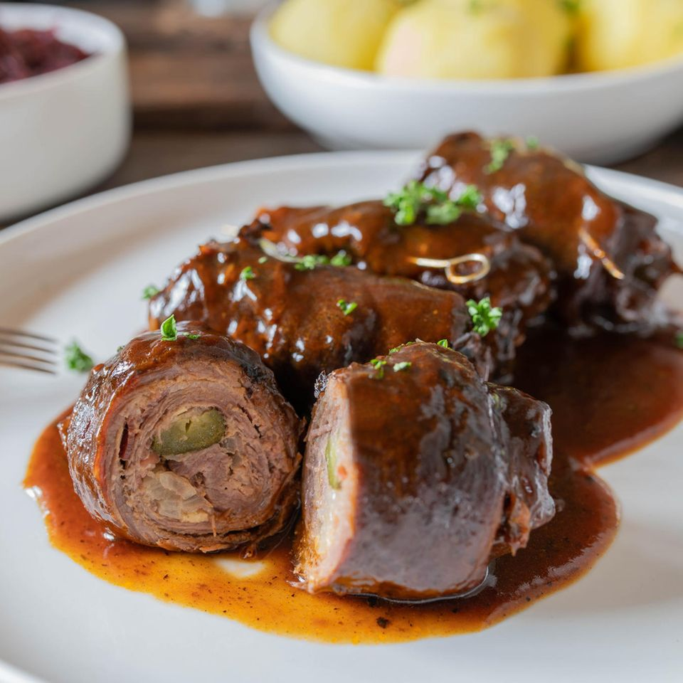

Ingredientes:
- 500g de farinha de trigo
- 10g de fermento biológico seco
- 1 colher de chá de sal
- 1 colher de chá de açúcar
- 300ml de água morna
- 2 colheres de sopa de manteiga
- 1 litro de água (para fervura)
- 2 colheres de sopa de bicarbonato de sódio
- Sal grosso a gosto
Preparo:
Misture a farinha, o fermento, o açúcar e o sal. Adicione a água morna e a manteiga, misturando até formar uma massa. Sove até ficar lisa e deixe descansar por 1 hora. Modele os pretzels no formato tradicional. Ferva a água com bicarbonato e mergulhe cada pretzel por alguns segundos. Coloque em uma assadeira, polvilhe sal grosso e leve ao forno pré-aquecido a 200°C por cerca de 15 a 20 minutos, até dourar.

Ingredientes:
- 4 bifes finos de carne bovina
- Sal e pimenta a gosto
- 4 fatias de bacon
- 1 cebola fatiada
- 2 picles em tiras
- Mostarda a gosto
- 2 xícaras de caldo de carne
- 1 colher de sopa de óleo
Preparo:
Tempere os bifes com sal e pimenta e espalhe mostarda sobre cada um. Coloque uma fatia de bacon, cebola e picles por cima. Enrole os bifes formando rolinhos e prenda com palitos. Em uma panela, aqueça o óleo e doure os rolinhos de todos os lados. Adicione o caldo de carne, tampe e cozinhe em fogo baixo por cerca de 40 minutos, até ficarem macios. Sirva quente com o molho formado na panela.
Ingredientes:
- 2 bifes de carne (vitela ou porco)
- Sal e pimenta a gosto
- 1 xícara de farinha de trigo
- 2 ovos
- 1 xícara de farinha de rosca
- Óleo para fritar
- Limão (opcional)
Preparo:
Tempere os bifes com sal e pimenta. Passe primeiro na farinha de trigo, depois nos ovos batidos e por último na farinha de rosca. Frite em óleo quente até ficar dourado e crocante dos dois lados. Retire e coloque em papel toalha para remover o excesso de óleo. Sirva com limão.
Ingredientes:
- 2 bifes de carne (vitela ou porco)
- Sal e pimenta a gosto
- 1 xícara de farinha de trigo
- 2 ovos
- 1 xícara de farinha de rosca
- Óleo para fritar
- Limão (opcional)
Preparo:
Tempere os bifes com sal e pimenta. Passe primeiro na farinha de trigo, depois nos ovos batidos e por último na farinha de rosca. Frite em óleo quente até ficar dourado e crocante dos dois lados. Retire e coloque em papel toalha para remover o excesso de óleo. Sirva com limão.